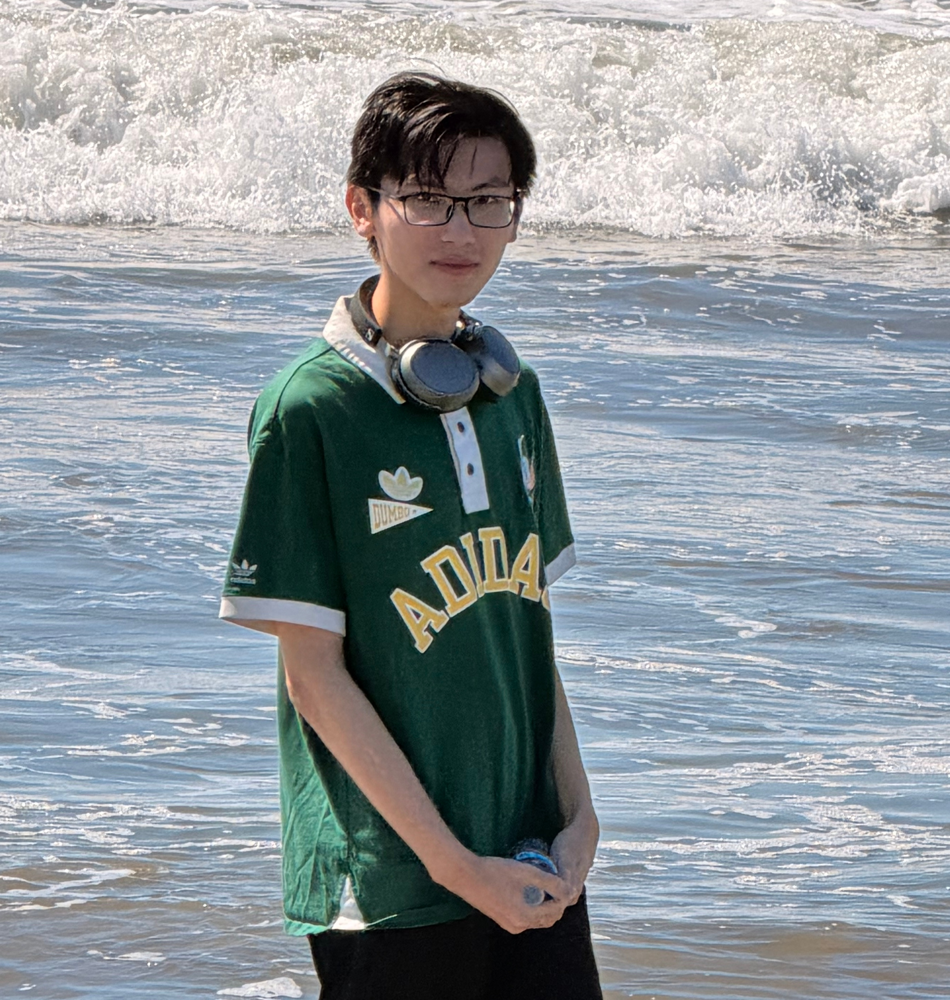
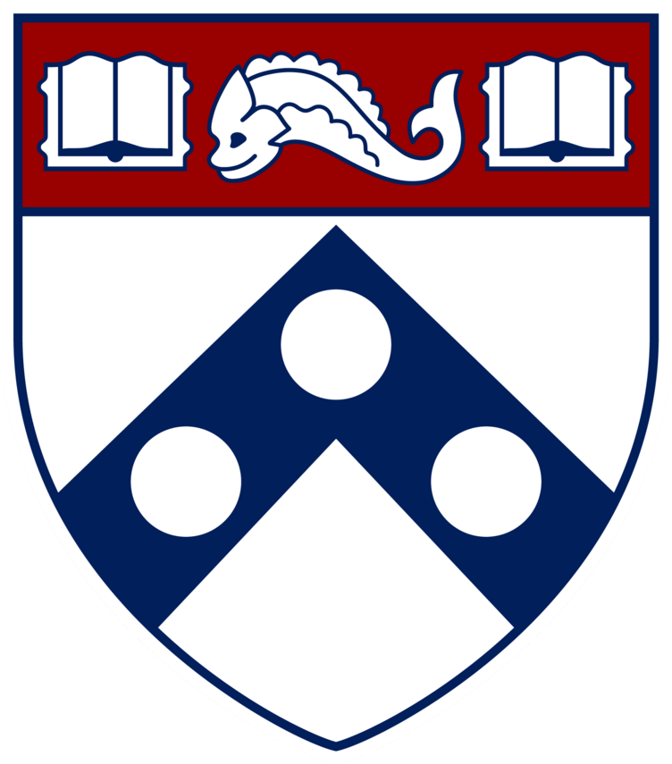

Robotic Motion Planning and Optimal Control
Input-constrained MPC and clipped LQR on a nonlinear planar quadrotor, alongside minimum-snap waypoint planning.

Philadelphia, PA Email GitHub CV
Researching world models, robot learning, and embodied AI.
I am currently an M.S.E. student in Mechanical Engineering and Applied Mechanics at the University of Pennsylvania. My research interests lie in world models, robot learning, and robotic perception. I am broadly interested in learning predictive representations of the physical world and leveraging them for embodied intelligence and robot control.

University of PennsylvaniaM.S.E. in Mechanical Engineering and Applied MechanicsAccelerated Master’s Program with Shanghai Jiao Tong University (3+1+1)No publications are currently listed.
Input-constrained MPC and clipped LQR on a nonlinear planar quadrotor, alongside minimum-snap waypoint planning.

Calibrated stereo reconstruction and NeRF evaluation: 24.19 dB PSNR / 0.831 SSIM over six 100×100 test views in one scene.

Collision-checked RRT paths, smooth joint timing and torque-driven tracking, checked against independent dynamics calculations.
Research and industry experience details are not currently published.
Experience page →